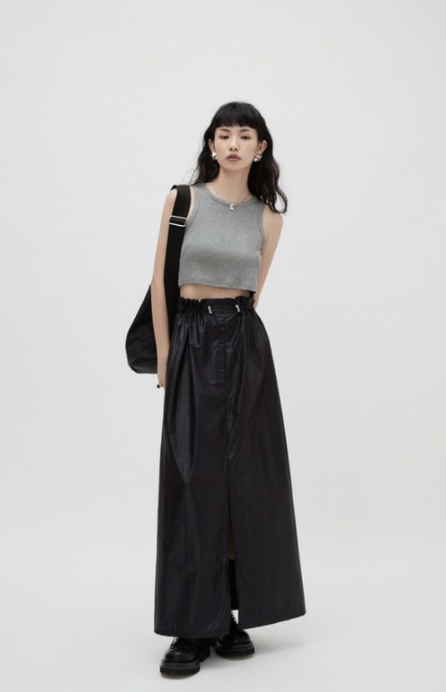

Feeling Gray
Feeling a simple, neutral outfit for a warm summer day? This outfit features a plain, ribbed gray top paired with baggy black pants, black handbag, and black chunky boots for a chic cool look.
Feeling Gray
Feeling a simple, neutral outfit for a warm summer day? This outfit features a plain, ribbed gray top paired with baggy black pants, black handbag, and black chunky boots for a chic cool look.
like

Purple Haze
A pop of purple is the centerpiece in this outfit. Be cool and stylish with a black cap on a hot summers day.
like